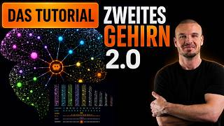
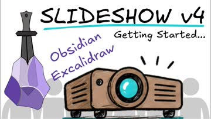
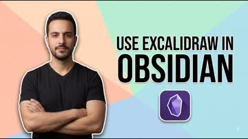

Startseite und Index des Claude-Code-Feldbuchs: eine nach Themen sortierte Sammlung von Selbststudium-Zusammenfassungen aus YouTube-Video-Transkripten.
Sammlung · Selbststudium
Claude-Code-Feldbuch
Zusammenfassungen aus YouTube-Video-Transkripten zum Nachschlagen und Wiederholen — jede Seite hebt die wichtigsten Befehle, Skills und Konzepte des jeweiligen Videos hervor.
Keine Treffer.
Tools & Erweiterungen
3 EinträgeSkills, Plugins und CLI-Tools, mit denen sich Claude Code gezielt erweitern lässt.


Workflow & Produktivität
7 EinträgeGewohnheiten, Prompting-Techniken und Einstellungen für den täglichen Umgang mit Claude Code.
Claude 2.0 ist da: Alle neuen Funktionen einfach erklärt

Obsidian + Claude: Mobiler Workflow (kostenlos)

Der echte Weg zum Second Brain – ohne Programmieren

Excalidraw Slideshow v4 in Obsidian

Excalidraw in Obsidian verwenden

Obsidian als zweites Gehirn für Claude

Zwanzig Gewohnheiten, die Claude Code spürbar besser machen
Webdesign & No-Code
5 EinträgeKI-Workflows, die Claude mit anderen Tools kombinieren, um Websites ohne manuelle Page-Builder-Arbeit zu gestalten.

Claude-Grundlagen
1 EintragEinsteigerfreundliche Erklärungen, wie Claude grundsätzlich funktioniert und wie man es im Alltag einsetzt.
Selbsthosting & Open-Source
1 EintragSelbst hostbare Open-Source-Alternativen zu kostenpflichtigen Abo-Tools, inklusive Setup und Verwaltung per Claude Code.
Skills für den Alltag
1 EintragNicht-technische Claude-Skills für Büro und Alltag — ohne Coding, direkt per Slash-Befehl nutzbar.
BMC Helix & ITSM
1 EintragEnterprise Service Management mit BMC Helix – Dashboards, CMDB und KI-gestützte Abfragen aus der Praxis.
Weitere Kategorien
Hier erscheinen künftige Themenblöcke, sobald weitere Video-Zusammenfassungen dazukommen.